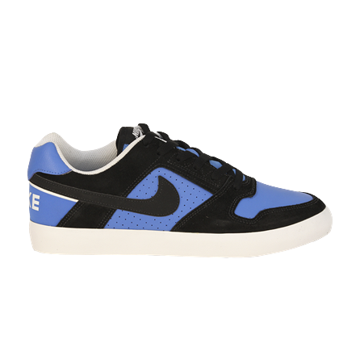

Nike SB

Tenis NIke SB Paul Rodrgues
Para sua Sessão
A linha de tênis SB da Nike é dedicada ao skateboarding. O tênis Nike SB Check foi criado para o conforto natural com ou sem skate, apresentando um cabedal muito leve e entressola extremamente macia para proteção com impactos. Seu fechamento é com cadarço e o material em camurça.
R$ 299,90